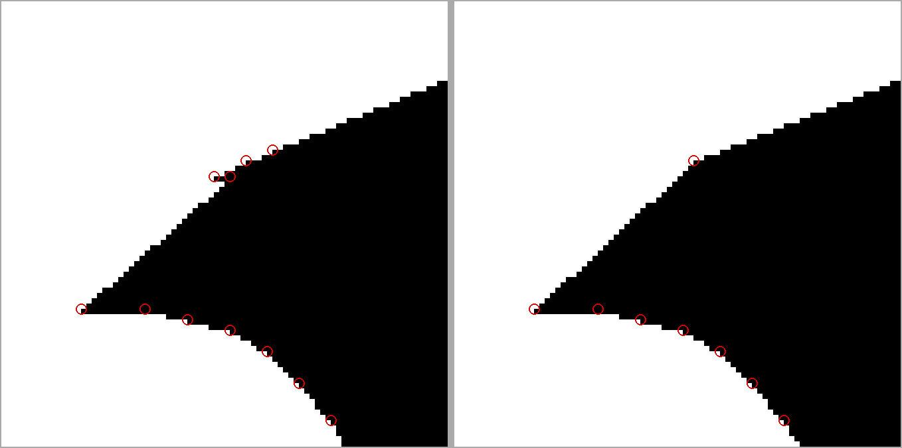
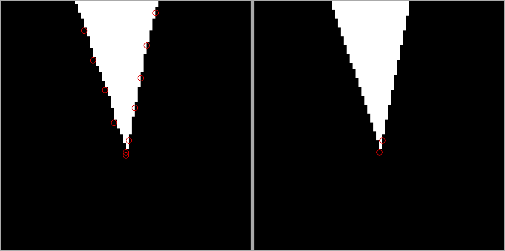
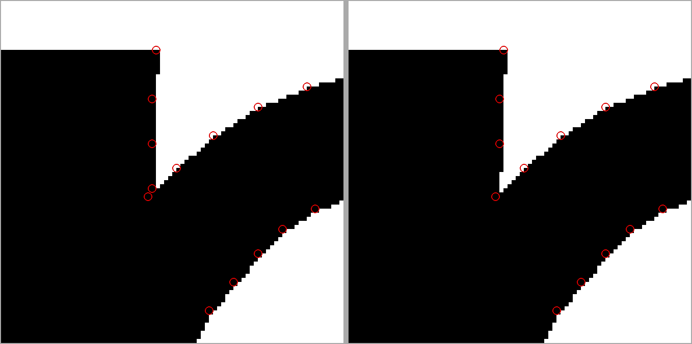
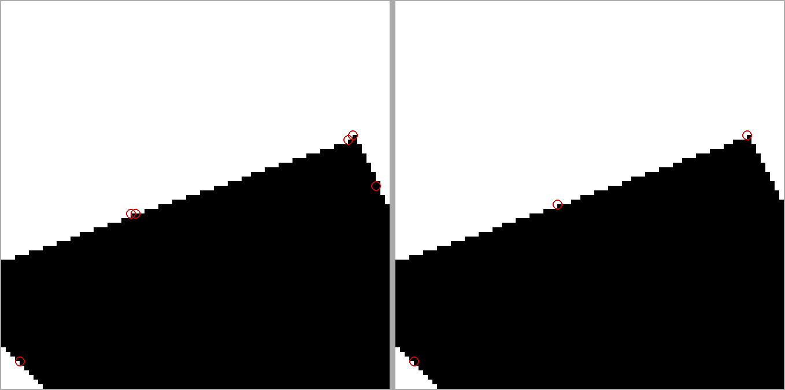
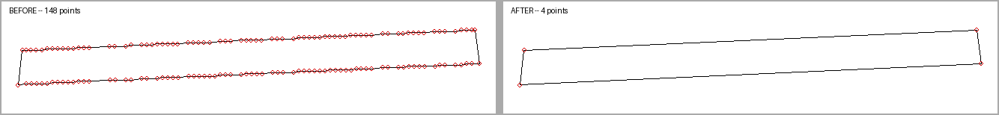
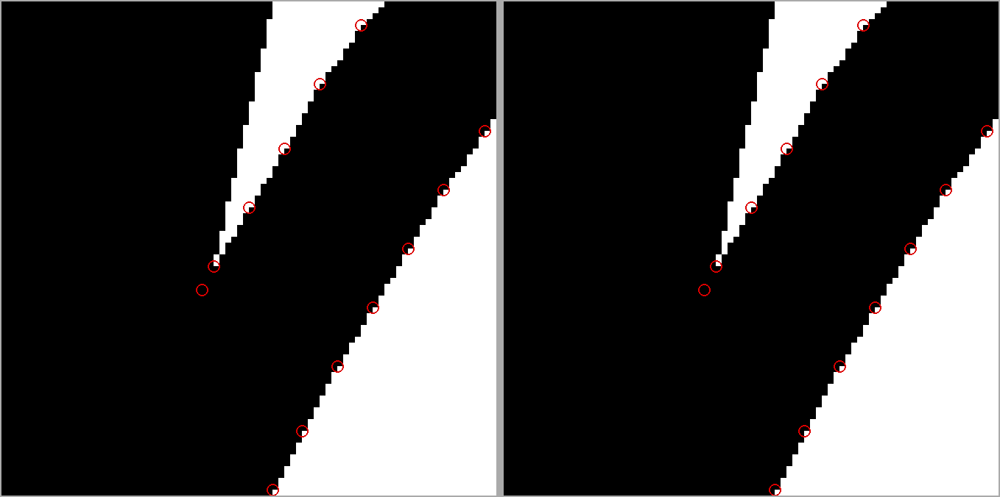
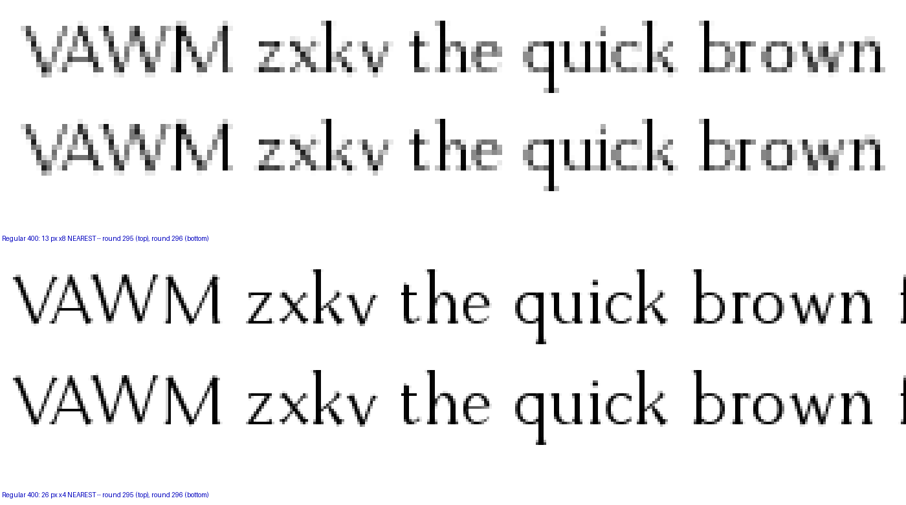
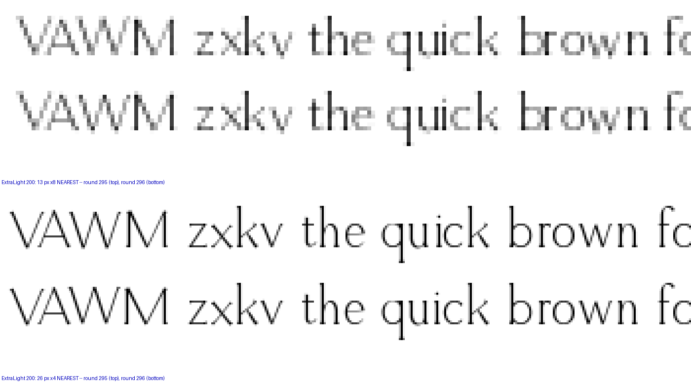
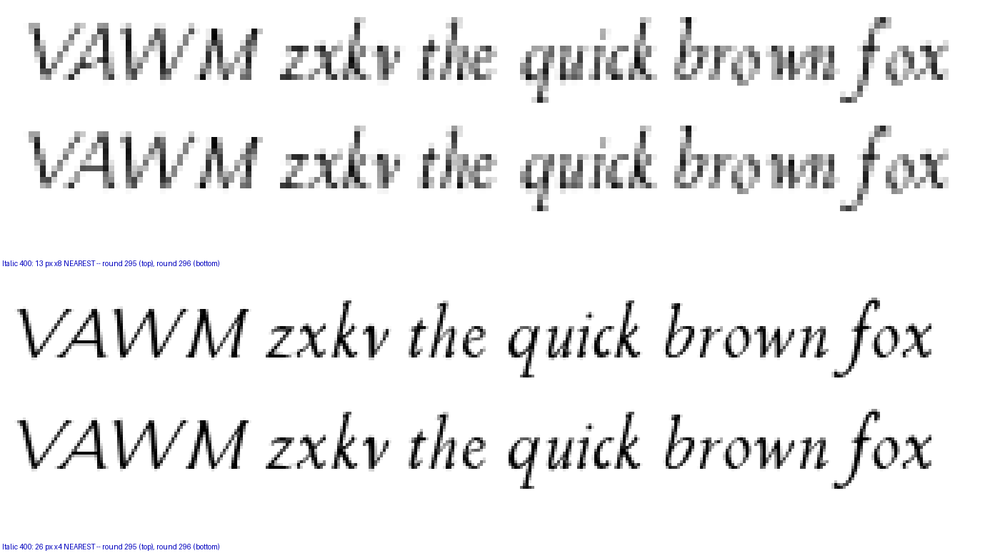
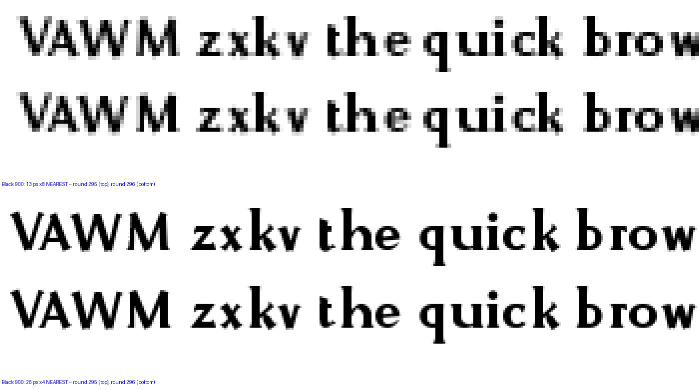

Round 296. The contour-hair gate’s 24 surviving letter findings are 6. They were not 24 faults: they were three shared sites around the ONE call that finishes every glyph, g.buffer(1.2, join_style=2) — the record’s ink spread. Its input carried exact duplicates and sub-unit edges, its output carried them at every shallow concave corner, and the vertices that lie ON the line they are in the middle of were being exported and then rounded into a staircase. Regular 400 and Black 900 are GREEN. In every figure BEFORE is on the left and AFTER on the right, at one pixel per design unit magnified x8 NEAREST, with the exported vertices circled.
| font | before | after |
|---|---|---|
| ExtraLight 200 | 6 | 1 |
| Regular 400 | 3 | 0 |
| Bold 700 | 1 | 1 |
| Black 900 | 3 | 0 |
| Italic 400 | 9 | 3 |
| BoldItalic 700 | 2 | 1 |
| total | 24 | 6 |
wedge() ends its outline fil[1:] + [B, A] and fil already ends at B, so every wedge in the face repeated its apex; a union of two parts sharing a corner repeated that corner too. A zero-length edge has no direction, so the offset normal at it is arbitrary, and the ExtraLight v’s top-left serif came back with a 2.8-unit horizontal spur standing off a face that is one straight line in the drawing. This site is v y w W M and the r’s terminal.

Where two diagonals meet, the union arrives along one straight run and leaves along another, and the ink spread’s offset lands its intersection a few units short of the nearest vertex on each run. The corner is then a real 150-degree crotch with a 3-unit arm — the gate’s exact signature for a hair — because the vertex NEXT to it is redundant. On the Black w that neighbor stands 0.0006 units off the chord through it.


Round 272 cut the crown’s trim with a lip dilated by a third of a unit, to stop a zero-width strip the ink spread would inflate. The dilation ends where the strokes’ ink above the line ends, so it left a 0.75-unit step on the apex edge at every roman weight. One unit is the grid the exporter rounds to, so the step is below anything the font can carry, and it is gone.

CONTEXT figure (a diagram of the point stream, not a render). The ExtraLight em dash is two straight edges and it shipped as 148 points stepping 207, 208, 208, 208, 209 — an 11-unit facet chain rounded to the em grid. At the Regular the roman o and 0 keep all 230 and 231 of their points and the s loses 3 of 180; the M goes from 466 to 59 and the W from 470 to 48. Total point count is down 25 to 33% depending on the style.

All six are one thing: a CONCAVE CROTCH where a bowl or an arch springs from a stem. A crotch of included angle θ advances its own vertex 1.2 / sin(θ/2) units up the bisector under the ink spread, and that comes off both arms. At the angles these are drawn at, the arm the gate wants does not exist in the drawing to begin with — five of the six would need a last facet longer than the project’s own 11-unit sampling. Resampling would not clear one of them.
| glyph | crotch | included | raw arms | spread eats | needs for an 8-unit arm |
|---|---|---|---|---|---|
| ExtraLight m | 160.5° | 19.5° | 8.15 / 10.71 | 7.09 | 15.1 |
| Bold m | 142.2° | 37.8° | 11.73 / 5.89 | 3.71 | 11.7 |
| Italic q | 162.0° | 18.0° | 7.19 / 10.82 | 7.68 | 15.7 |
| Italic b | 158.9° | 21.1° | 4.60 / 12.08 | 6.54 | 14.5 |
| Italic p | 166.7° | 13.3° | 9.78 / 1.60 | 10.38 | 18.4 |
| BoldItalic p | 154.9° | 25.1° | 11.11 / 9.09 | 5.51 | 13.5 |

Two ways to zero, both owner decisions. Open those crotches, which is a shape change in the m and in the italic b p q; or have the gate measure the arms on the contour BEFORE the ink spread, where they are 4.6 to 12.1 units and nothing is eaten.
This round touched every shipped weight, so here is what it did where the type is actually read. The mean ink of a line moves by hundredths of a level; individual edge pixels do move, which is what replacing a staircase with the line it was sampling looks like.



